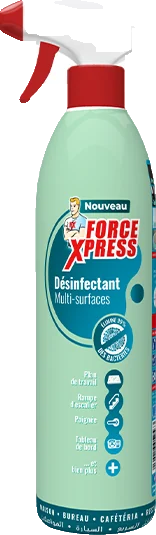
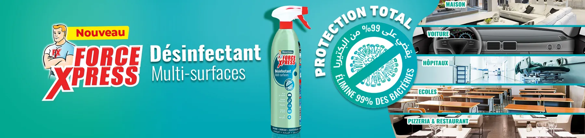
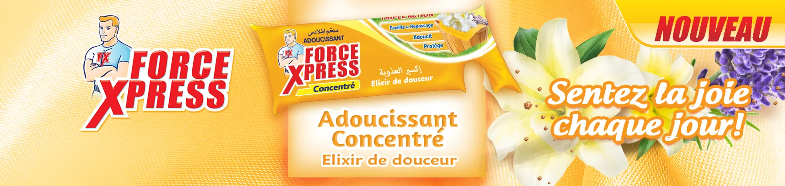
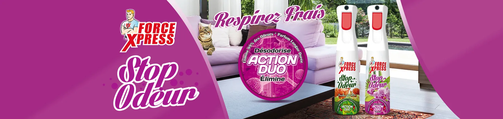
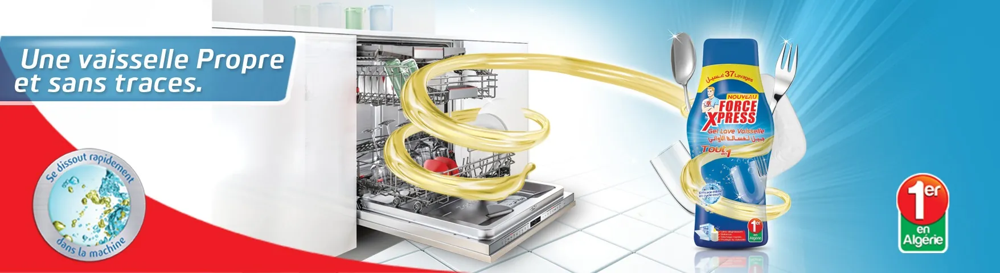
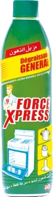
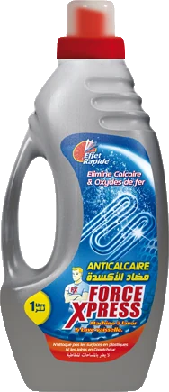
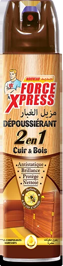

Désinfectant multi-surfaces
Élimine 99 % des bactéries sur toutes les surfaces lavables : maison, voiture, écoles, cafés et restaurants. Un seul spray, une protection totale.
- Prêt à l'emploi
- Usage domestique et professionnel
Fabriqué en Algérie depuis 1999
نظافة لا تخدع
Linge, cuisine, salle de bain, mains, parfums d'intérieur et insecticides : la gamme Force Xpress couvre tout l'entretien de la maison, avec des produits pensés pour les familles algériennes.
Choisissez une pièce de la maison, on vous montre le bon produit.
SALD développe ses formules avec des partenaires de renommée internationale. Trois lancements récents.

Élimine 99 % des bactéries sur toutes les surfaces lavables : maison, voiture, écoles, cafés et restaurants. Un seul spray, une protection totale.
Une lessive liquide pour les peaux sensibles et le linge délicat de bébé : laine, soie et cachemire. 40 lavages par bouteille.
Le premier gel pour lave-vaisselle lancé en Algérie. Il se dissout rapidement, même en cycle court, et laisse une vaisselle propre et sans traces.




Créée en 1999, SALD a grandi en lançant des produits qui n'existaient pas encore sur le marché algérien. Voici comment la marque Force Xpress s'est construite, étape par étape.
Les gestes simples qui font gagner du temps à la maison.

Vaporisez le dégraissant général sur la hotte ou la plaque encore tiède, laissez agir une minute puis essuyez avec une éponge humide. Pour les surfaces brûlées, passez au dégraissant professionnel.

L'eau calcaire abîme la résistance de votre lave-linge. Ajoutez l'anticalcaire à chaque lessive : le linge reste souple et la machine vous dit merci.

Le dépoussiérant 2 en 1 nettoie et fait briller le bois et le cuir en un seul passage. Vaporisez sur un chiffon doux, jamais directement sur le meuble.
Grossistes, supérettes, centrales d'achat ou clients professionnels (hôtels, restaurants, collectivités) : rejoignez le réseau de distribution SALD.
Une question sur un produit, une réclamation ou une commande professionnelle ? L'équipe SALD vous répond.
Offre de lancement
Ce site vous plaît ? Webminds le met en ligne pour Force Xpress et vous offre un mois de publications sur vos réseaux sociaux.